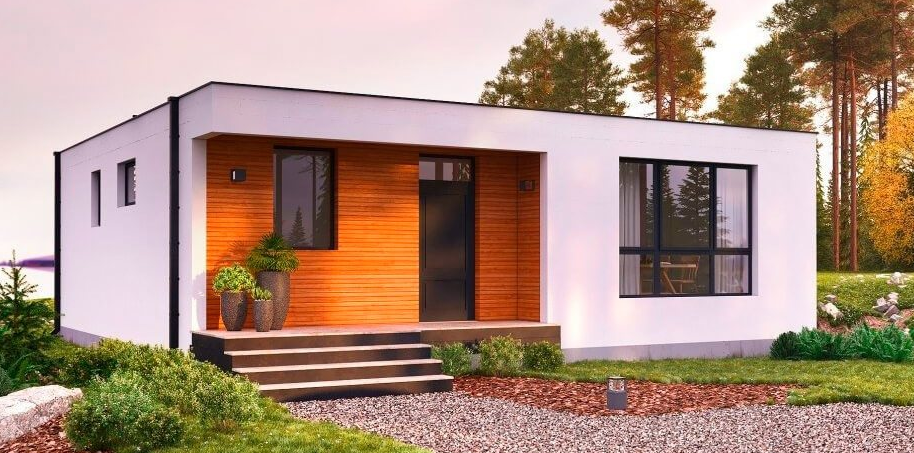
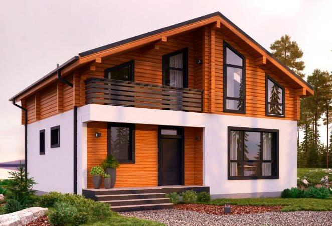
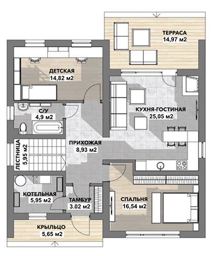
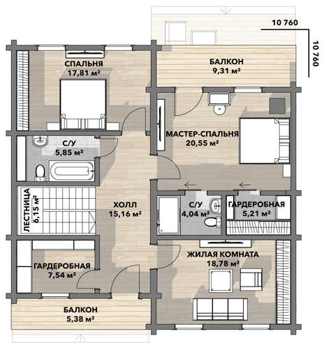

Внешний вид
Одноэтажная версия с плоской крышей.

Двухэтажная версия

Есть вариант второго этажа не из бруса, а каркасником (фархверх) и из газобетона.
Планировка дома
Первый этаж 104,8 м2: кухня-гостиная, детская, спальня, терасса, котельная.
Второй этаж 110,8 м2: мастер-спальня, спальня, жилая комната, гардеробная, санузел, 2 балкона.

Этаж 1

Этаж 2
Здесь прикреплен проект версии 2.4 (от 02.04.2019).
Утепленный газобетонный дом. Площадь общая: 104.5 м2. Высота потолков от чистового пола до перекрытия 3,07 м. Размеры в плане без учета крыльца и веранды (по внешнему контуру парапета): 10,98х10,98 м Толщина газобетонной стены: 250 мм. Толщина газобетонных перегородок: 150 мм. Утепление наружных стен ППС-16Ф: 120 мм. Перекрытие сборно-монолитное МАРКО (утепленное): 200 мм.
Монолитная утепленная плита 250 мм, армированная арматуроа А500С 12 мм с шагом 200 мм, на песчаной подушке 300 мм, бетон В25, утепление снизу XPS 50 мм, утепление торца плиты XPS 100 мм, терморазрыв с террас XPS 100 мм, заведение в котельную гильз для коммуникаций, разведение канализации под плитой. Подготовка под отмостку и утепление периметра песчаной подушки вокруг фундамента.
Кладка несущих стен из газобетона YTONG D500 толщиной 250 мм, на минеральный клей или клей-пену, армирование кладки (каждый 4 ряд), армирование подоконных зон, укладка отсечной гидроизоляции под первый ряд блоков. Кладка не несущих стен и перегородок из газобетона YTONG D500 толщиной 250 мм и 150 мм. Установка оконных и дверных перемычек заводского изготовления из газобетона марки D600. Изготовление и установка перемычек на больших проемах.
Сборно-монолитное перекрытие по технологии МАРКО толщиной 200 мм, с возможностью свободной планировки и достройки второго этажа в будущем, бетонная стяжка по сетке толщиной 50 мм, бетон В25. Армирование и заливка армопояса по несущим стенам.
Кладка парапетов по периметру дома из газобетона. Высота парапета 500 мм. Монтаж пароизоляционного слоя, Утепление XPS 130мм, уклон клиновидным утеплителем 1,9%, укладка ПВХ мембраны Технониколь, организация парапетных воронок, укладка балласта из щебня
Утепление фасадным пенополистиролом толщиной 120мм, нанесение декоративной силикатно-силиконовой штукатурки колерованной в цвет на выбор заказчика.
Многофункциональные двухкамерные стеклопакеты с I-стеклами, профиль 70 мм.
Кладка несущих стен из газобетона YTONG D500 толщиной 250 мм, на минеральный клей или клей-пену, армирование кладки (каждый 4 ряд), армирование подоконных зон. Установка оконных и дверных перемычек заводского изготовления из газобетона марки D600. Изготовление и установка перемычек на больших проемах.
Пиломатериал 1-го сорта. Утепление PIR утеплителем толщиной 150 мм поверх стропил. Кровля двухслойная гибкая черепица Shinglas. Подшивка свесов кровли и водосточная система.
Утепление фасадным пенополистиролом толщиной 120мм, нанесение декоративной штукатурки CERESIT колерованные в цвет на выбор заказчика.
Многофункциональные двухкамерные стеклопакеты с i-стеклами, профиль 70 мм.
клееный брус
100 мм PIR сендвич панели
120 мм PIR сендвич панели
двухкамерные с двумя i-стеклами и заполнением инертным газом из каленого стекла
клееный брус 200*190
стропила 50*200 cухая доска. Подшивка свесов кровли и водосточная система. Утепление - 200 мм минеральной ваты. Мансардные окна — 2 шт
тонировка дома в 2 слоя
многофункциональные двухкамерные стеклопакеты с i-стеклами, профиль 70 мм.